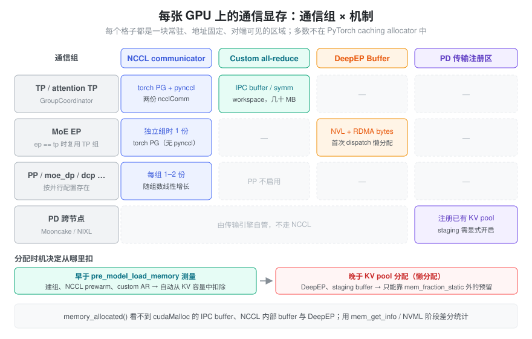
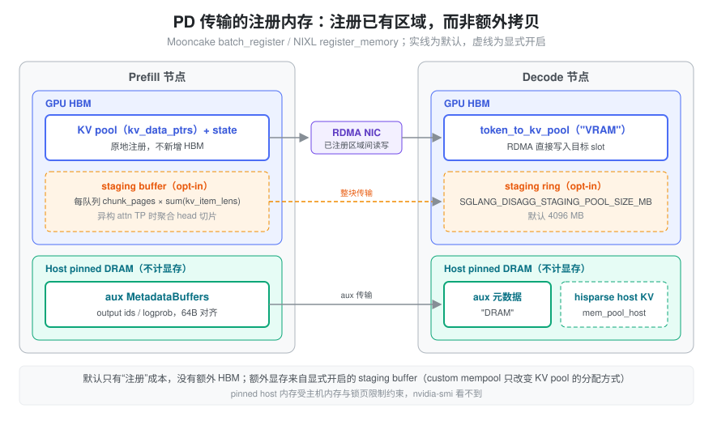

memory_allocated()只有几十 GB，nvidia-smi却多出好几个 GB——多出来的这部分去哪了？- 同样的模型，把 TP 从 4 改成 8、或者打开 DeepEP，KV cache 容量为什么会掉一截？
- custom all-reduce、DeepEP、Mooncake 这些通信组件各自占了多少显存？是启动时就占好，还是第一次通信才分配？
- PD 分离时 KV 要跨机传输，是不是还得再准备一份同样大的“发送缓冲区”？
这些问题都指向同一类容易被忽视的显存：通信与传输显存。它不属于模型计算，却和权重、KV
cache 一样常驻；它大多不经过 PyTorch caching allocator，所以
torch.cuda.memory_*
系列接口经常看不到它。本篇是 VRAM
Usage 的子页，覆盖其中第 6 类（Communication
Memory）、第 7 类里与通信库相关的 context 开销，以及 3A（MoE
buffer）与 3C（PD 传输内存）。通信算子本身的选择逻辑见 多 GPU
通信与执行，通信抽象见 Communicator，PD 传输协议见 PD
Design，这里只算“显存账”。
问题：通信 buffer 为什么不能随用随还
普通激活张量的生命周期由 caching allocator 管理：forward 时申请，引用计数归零就把块还给缓存池，下一次可以分给别的张量。通信 buffer 走不了这条路，原因是对端要按地址访问它：
- 注册：RDMA 网卡只能读写事先注册过（pin 住物理页、拿到 memory key）的内存区域；NCCL 的 user buffer registration、NVLS、symmetric window 也都要求 buffer 先注册到 communicator。注册本身有代价，不可能每次通信重新做一遍。
- IPC 映射：单机多卡 custom all-reduce
让每个 rank 直接读写其它 rank 的显存。这需要把本地 buffer 的
IPC handle 发给对端、对端再
cudaIpcOpenMemHandle映射进自己的地址空间。映射之后，这块地址就不能被 allocator 挪作他用。 - CUDA Graph 记住指针：decode 阶段通常在 CUDA Graph 里执行通信；graph replay 时直接使用捕获时的地址，buffer 必须在整个服务期间保持不变（见 Cuda Graph）。
因此通信库倾向于在初始化时一次性申请一块固定区域，之后反复复用，并且常常绕开
PyTorch allocator：直接
cudaMalloc、ncclMemAlloc、cuMem
VMM API，或者由 DeepEP、Mooncake
这类第三方库在内部自行分配。
抽象：通信显存 = 通信组 × 机制 的固定区域
可以把每张 GPU 上的通信显存看成一张二维表：行是通信组（TP、attention TP、MoE EP、PP、DP……），列是通信机制（NCCL communicator、custom all-reduce、symmetric memory、DeepEP buffer、PD 传输注册区）。每个非空格子都是一块常驻、地址固定、对端可见的区域，总量大致等于所有格子之和。

这张表带来三个推论：
- 按组线性增长：组越多、每组启用的机制越多，占用越大。并行配置不仅改变计算切分，也改变通信显存的格子数。
- 大部分在 allocator
之外：
memory_allocated()/memory_reserved()看不到cudaMalloc直接申请的 IPC buffer、NCCL 内部 buffer 和 DeepEP buffer。只有基于驱动的torch.cuda.mem_get_info()或 NVML 才能看到，口径差异见 显存预算与统计口径。 - 分配时机决定它从哪里扣：在测量“模型加载前可用显存”之前就分配的部分，会自然地从
KV cache 预算里扣掉；之后才懒分配的部分，必须落在
mem_fraction_static之外的预留空间里，否则就会在 CUDA Graph capture 或第一次请求时 OOM。
NCCL communicator：每个组一份，懒初始化
每个 NCCL communicator（ncclComm）在 GPU
上都有自己的开销：每个 channel、每个 peer 的收发
buffer（大小由 NCCL_BUFFSIZE 控制，上游默认 4
MiB），加上 proxy、FIFO 等内部结构；启用 NVLS（NVLink
SHARP）时还要额外申请 multicast 内存。这些都由 NCCL
直接向驱动申请，不在 PyTorch allocator 里。具体数值与 NCCL
版本、拓扑、channel 数有关，应以实测为准。
在 SGLang 里，communicator
的数量比直觉多。distributed/parallel_state.py
的 GroupCoordinator 为每个组创建：
- 一个
device_group（torch.distributed.new_group，NCCL 后端，即 torch 的 ProcessGroupNCCL）； - 一个
cpu_group（gloo，用于交换 IPC handle 等元数据，不占显存）； - 当
use_pynccl且world_size > 1时，再创建一个PyNcclCommunicator。它在pynccl.py里通过ncclCommInitRank/ncclCommInitRankConfig建立独立的ncclComm。
所以同一个 TP 组，可能同时持有 torch 和 pynccl 两份 NCCL communicator。不过 SGLang 会尽量复用组，避免格子继续增加：
| 组 | 何时复用 | 不复用时的配置 |
|---|---|---|
| attention TP | attn_tp_size == tensor_model_parallel_size
时直接用 _TP |
新建 attention_tp，不启用 custom
AR；只有同步 token ids 或启用 symm mem 时才用 pynccl |
| MoE EP | moe_ep_size == tp_size 时直接用
_TP |
新建
moe_ep，use_pynccl=False、use_custom_allreduce=False |
| MoE TP | 同上 | 新建 moe_tp |
| PP | — | pp 组不启用 custom AR |
另外还有
moe_dp、dcp、attn_cp
等组，按并行配置决定是否存在。
NCCL
的传输资源是懒建立的：ncclCommInitRank
之后，与某个 peer 的连接和 buffer
往往要等第一次真正通信时才分配。如果这一步发生在 KV cache
已经按剩余显存分满之后，就可能在 CUDA Graph capture 时
OOM。distributed/bootstrap.py 的
init_torch_distributed()
因此按以下顺序操作：
- 记录
before_avail_memory，然后_init_parallel_groups建组； - 可选
_prewarm_nccl（--pre-warm-nccl，默认只在 AMD GPU 上开启）：在 TPdevice_group上做一次all_reduce，强制完成初始化； - 若启用 TP lm_head all-to-all，调用
_prewarm_tp_lm_head_all_to_all()。源码注释写得很直接：在模型显存记账之前把 PyNCCL P2P 资源物化出来，so its persistent transport allocations are included in later KV-cache sizing instead of appearing during capture； - 用
get_available_gpu_memory(..., distributed=world_size > 1)测出pre_model_load_memory（底层是torch.cuda.mem_get_info，能看到非 torch 分配），并由_check_tp_memory_balance检查各 rank 是否失衡（低于本地 90% 时告警 memory capacity is unbalanced）。
几个影响 NCCL 显存的环境变量，由
entrypoints/engine.py 的
_set_envs_and_config 设置：
NCCL_CUMEM_ENABLE：用户未设置时取int(enable_symm_mem)；启用 symm mem 或多 MNNVL 节点时强制为 1，让 NCCL 用 cuMem VMM 分配内部 buffer。NCCL_NVLS_ENABLE：取int(enable_nccl_nvls or enable_symm_mem)，默认关闭，因此默认不付 NVLS multicast 显存。NCCL_GRAPH_MIXING_SUPPORT=0（dcp_size > 1时）与CUDA_DEVICE_MAX_CONNECTIONS=8。- SGLang 不设置
NCCL_BUFFSIZE，沿用 NCCL 默认值；需要压缩通信显存时可以由用户自行调小，但会影响带宽。
Custom all-reduce：IPC buffer 与 symmetric workspace
TP 组内的小消息 all-reduce 通常不走 NCCL，而是走 custom
all-reduce（选择条件见 多
GPU 通信与执行）。它的前提是每个 rank 能直接读写其它
rank 的一块 buffer，所以必须在初始化时把这块 buffer
建好并互相映射。distributed/device_communicators/custom_all_reduce.py
的 dispatch_custom_allreduce() 在 CUDA
上默认返回 v2
实现（SGLANG_OPT_USE_CUSTOM_ALL_REDUCE_V2
默认开启，且 can_use_custom_all_reduce_v2
通过），否则回退到 legacy 实现。两者的显存结构不同。
Legacy
CustomAllreduce：_MAX_CAR_SIZE = 8192 * 1024（8
MiB，HIP 上 16 MiB），每个 rank 分配三块：
| buffer | 来源 | 大小 | 作用 |
|---|---|---|---|
meta_ptrs |
create_shared_buffer |
ops.meta_size() + max_size |
跨 rank 同步用的信号区 + 中间结果 |
buffer_ptrs |
create_shared_buffer |
max_size |
预注册的 IPC 输入区，eager 模式下先把输入拷进来 |
rank_data |
torch.empty(..., uint8) |
max_size |
存放已注册 buffer 的指针表 |
create_shared_buffer 直接调用
CudaRTLibrary().cudaMalloc，绕过
PyTorch allocator，再用
cudaIpcGetMemHandle 导出 handle，经
all_gather_object 交换后由对端
cudaIpcOpenMemHandle 打开。注意映射对端 buffer
不消耗本卡的物理显存，本卡真正付出的只是自己那几块，量级是几十
MB。CUDA Graph 模式下，capture() 结束时调用
register_graph_buffers()，把 graph
里实际使用的输入地址注册给对端，避免 eager
模式那次额外拷贝。
CustomAllReduceV2（custom_all_reduce_v2.py）：
- 最大消息大小由
SGLANG_CUSTOM_ALL_REDUCE_V2_MAX_SIZE_KB决定（默认 16 × 1024 KB，即 16 MiB），可以用SGLANG_FORCE_CUSTOM_ALL_REDUCE_V2_PULL_SIZE_KB/..._PUSH_SIZE_KB分别覆盖。 _init_workspace只做一次 symmetric 分配（_SymmetricMemory.empty_strided_p2p+rendezvous），内部布局为[2 × world_size 个 push buffer | pull buffer | pull semaphores]，总量约为2W × max_push_size + max_pull_size + 128 × num_pull_blocks字节。- 另有
graph_params = torch.zeros((131072, world_size), uint64)，即_MAX_GRAPH_INPUTS = 131072行的设备指针表。world size 为 8 时正好是 131072 × 8 × 8 B = 8 MiB。这块由 torch allocator 分配，能被memory_allocated()统计。 - 初始化日志 All Reduce config: symmetric_memory = X MB, local_buffer = Y MB, multicast = … 直接给出了这部分的账。
symmetric memory pool：开启
--enable-symm-mem
后，pynccl_allocator.py 的
SymmetricMemoryContext 让 buffer 通过
ncclMemAlloc
分配、ncclCommWindowRegister
注册。所有组共享同一个
torch.cuda.MemPool（get_nccl_mem_pool()），所以这部分会出现在
allocator 统计里，但属于独立
pool，普通张量用不上。prealloc_symmetric_memory_pool
可以按 SGLANG_SYMM_MEM_PREALLOC_GB_SIZE GiB
预先占好整块（默认 -1 表示不预分配），调用点在
model_executor/model_runner_components/cuda_graph_setup.py。这样做的理由写在注释里：PyTorch
mempool 在 OOM 场景下不会做碎片整理，与其在 capture
中途零碎增长，不如一开始就占满。
DeepEP：dispatch/combine buffer 由模式决定
MoE 在 EP 下用 all-to-all 把 token 分发给专家所在的
rank，再把结果收回来（dispatch/combine 流程见 多 GPU 通信与执行 与 EP）。DeepEP
把这两个方向需要的空间合成一个
deep_ep.Buffer，内部分为两部分：
- NVL
buffer（
num_nvl_bytes）：节点内通过 NVLink 互相可见的显存； - RDMA
buffer（
num_rdma_bytes）：跨节点通过 NVSHMEM/IBGDA 访问的对称显存。
layers/moe/token_dispatcher/deepep.py 的
DeepEPBuffer.get_deepep_buffer(group, hidden_size, param_bytes, deepep_mode, num_max_dispatch_tokens_per_rank, num_experts)
按模式计算两者的大小：
| 模式 | 大小由什么决定 | 计算方式 |
|---|---|---|
| normal | hidden_bytes = hidden_size × param_bytes、EP
组大小、dispatch/combine
config（--deepep-config 或 DeepEP 默认
config） |
对 dispatch/combine 两个 config 分别取
get_nvl_buffer_size_hint/get_rdma_buffer_size_hint，再取最大值 |
| low_latency | num_max_dispatch_tokens_per_rank、hidden_size、EP
组大小、num_experts |
Buffer.get_low_latency_rdma_size_hint(...) |
| auto | 两者都要支持 | 两套都算，num_rdma_bytes 取较大值 |
关键参数：
param_bytes硬编码为 2（按 BF16 预留）。num_max_dispatch_tokens_per_rank来自SGLANG_DEEPEP_NUM_MAX_DISPATCH_TOKENS_PER_RANK（默认 128，断言不超过 1024）。源码注释提醒 A large value will lead to large memory occupation。low-latency 模式要为“每个 rank 最多收到这么多 token、每个 token 可能发往任一 local expert”预留空间，所以它的 buffer 与num_experts和这个上限都成正比。- QP 数
num_qps_per_rank：normal 取num_sms，low_latency 取num_experts // group.size()，auto 取两者最大值。它影响的是网卡侧资源，而不是 HBM 大小。
分配时机：buffer 是进程级单例，存在
get_resources().buffers["deepep_ep_state"]
里，第一次 dispatch 时通过
_get_buffer()
懒创建，之后一直复用。也就是说它发生在 KV cache
分配之后，只能从 mem_fraction_static
之外的预留空间里出。server_args.py 的
reserve_for_deepep_a2a_mb() 专门为此预留：非
prefill 节点、decode CUDA Graph 开启且
moe_a2a_backend == "deepep" 时多留 2
GiB（注释：DeepEP all-to-all buffers captured in the
decode graph are real extra allocations）。这 2 GiB 在
_handle_gpu_memory_settings 自动推导
mem_fraction_static 时加到
reserved_mem 上，见 显存预算与统计口径。如果手动指定了
--mem-fraction-static，这层保护就不再生效，需要自己估算
DeepEP 的大小。
PD 分离：注册已有 KV pool，而不是再拷一份
PD 分离要把 prefill 节点算好的 KV 传给 decode 节点（协议与流程见 PD Design）。一个常见误解是：传输需要一份和 KV cache 等大的“发送缓冲区”。SGLang 的默认做法正好相反：把已有的 KV pool 直接注册给传输引擎，RDMA 从 KV pool 原地读写，不额外占 HBM。

Mooncake（disaggregation/mooncake/conn.py）：
_registerable_regions()收集三类区域并去重：kv_args.kv_data_ptrs/kv_data_lens（每层 KV buffer）、aux_data_ptrs/lens（prefill 产出的 output ids、cached tokens、logprob 等元数据）、state_data_ptrs/lens（Mamba/SWA 等状态）。register_buffer_to_engine()调用self.engine.batch_register(ptrs, lens)，退出时batch_deregister。注册只是 pin 住页面、生成 memory key，不复制数据。
NIXL（disaggregation/nixl/conn.py）：register_buffer_to_engine()
按内存类型分组调用
self.agent.register_memory(addrs, mem_kind)。KV
区域按实际位置标为 "VRAM" 或
"DRAM"，aux 固定为 "DRAM"，state
为 "VRAM"。
注册区里有两类不在 HBM 上：
- aux
元数据：
disaggregation/utils.py的MetadataBuffers默认device="cpu"（Ascend 上为 NPU，只有SGLANG_MOONCAKE_CUSTOM_MEM_POOL == "INTRA_NODE_NVLINK"时放 CUDA）。它很小，但每条记录都按 RDMA 最小 64 字节对齐（注释 The minimal size for RDMA is 64Bytes, so we pad）。 - hisparse 下的 decode
KV：
disaggregation/decode.py在启用 hisparse 时把传输目标设为hisparse_coordinator.mem_pool_host，内存类型为"DRAM"；否则是token_to_kv_pool的get_contiguous_buf_infos()，类型为"VRAM"。
这些是 pinned host memory，会占主机内存、受
ulimit -l
等限制，但不计入显存，nvidia-smi
也看不到。
真正额外占 HBM 的只有两种显式开启的情况：
- staging
buffer（
SGLANG_DISAGG_STAGING_BUFFER=1，默认关闭）。disaggregation/common/staging_buffer.py的说明是：prefill 与 decode 的 attention TP 不同（异构 TP）时，每个 token 的 head 切片在对端是分散的，逐 token RDMA 太碎；先在 GPU 上把切片聚合到连续的 staging buffer，再整块传输。staging_handler.py中：- prefill 侧
init_staging_buffers为每个传输队列分配一块max(1, chunked_prefill_size // page_size) × sum(kv_item_lens)字节的 buffer，大小随 chunk 大小和每页 KV 字节数增长； - decode 侧
init_staging_allocator分配一个SGLANG_DISAGG_STAGING_POOL_SIZE_MB（默认 4096 MB）的环形缓冲区。
torch.empty分配（可放在 custom mempool 中）并注册给传输引擎。它们发生在 KV pool 之后，同样要从预留空间里出。 - prefill 侧
- custom
mempool（
SGLANG_MOONCAKE_CUSTOM_MEM_POOL=NVLINK或BAREX）。disaggregation/mooncake/utils.py的init_mooncake_custom_mem_pool用NVLinkAllocator/BarexAllocator构造torch.cuda.MemPool，经mem_cache/utils.py的maybe_init_custom_mem_pool让 KV pool 本身从这个 pool 分配。它改变的是 KV pool 的分配方式（让它可被 NVLink/Barex 直接访问），而不是新增一份 KV。
统计与排查：怎么把这笔账算出来
通信显存大多在 allocator 之外，排查时要靠“阶段差分”而不是单个指标：
| 观察点 | 能看到什么 |
|---|---|
init_torch_distributed 结束时的日志
Init torch distributed ends … mem usage=X GB |
建组 + NCCL prewarm 消耗的显存，即本卡
before_avail_memory - local_gpu_memory |
| custom AR v2 的 All Reduce config: symmetric_memory = … MB, local_buffer = … MB | 自定义 all-reduce 的 symmetric workspace 与本地 buffer |
CUDA Graph capture 前后
torch.cuda.mem_get_info() 的差 |
graph pool + 懒分配的 DeepEP buffer、NCCL 连接资源的合计 |
memory_reserved() 与
nvidia-smi 进程占用之差 |
CUDA context、NCCL、cudaMalloc 直接申请的
IPC buffer、DeepEP 等非 torch 分配的总和 |
常见症状与对应的格子：
- TP 各 rank 可用显存不一致，触发 memory capacity is unbalanced：往往是某些 rank 额外创建了组（例如 attention TP 与 TP 不等时），或同机有其它进程占卡。
- capture 阶段
OOM、请求阶段正常：懒分配的通信资源（DeepEP、P2P
transport）没有被预留覆盖。可以降低
mem_fraction_static，或确认是否走了reserve_for_deepep_a2a_mb的自动推导。 - custom AR 初始化失败：日志提示 Setup Custom allreduce failed … specify –disable-custom-all-reduce，通常与 IPC/P2P 不可用有关。关闭后会退回 NCCL，省掉几十 MB，但小消息延迟变高。
- 开启 DeepEP low-latency 后 KV
容量大降：检查
SGLANG_DEEPEP_NUM_MAX_DISPATCH_TOKENS_PER_RANK与专家数。它们决定 RDMA buffer 的大小，而且这块 buffer 会在每个 EP rank 上各占一份。
小结
通信与传输显存的共同点是地址固定、对端可见、一次分配长期复用。所以它不能像激活那样随用随还，大多也不在 PyTorch caching allocator 里。可以把它理解成“通信组 × 机制”的一张表：
- 每个 NCCL 组各有一份 communicator 开销，SGLang 的 TP 组还可能同时有 torch 和 pynccl 两份；
- custom all-reduce 用
cudaMalloc的 IPC buffer（legacy）或一块 symmetric workspace（v2），量级为几十 MB； - DeepEP 的 buffer 大小由模式决定：normal 取决于 hidden
大小与 config，low-latency 取决于每 rank 最大 token
数与专家数。它在第一次 dispatch 时懒分配，靠
reserve_for_deepep_a2a_mb的 2 GiB 预留兜底； - PD 分离默认把已有的 KV pool 注册给 Mooncake/NIXL，不额外占 HBM。aux 元数据和 hisparse 下的 KV 在 pinned host memory 上，不算显存。只有 staging buffer 和 custom mempool 这类显式开启的选项才改变 HBM 账。
做预算时要分清两条线：在
pre_model_load_memory 之前分配的部分，自动从 KV
容量里扣除；之后懒分配的部分，必须由
mem_fraction_static
之外的预留空间兜住。前者影响 token capacity，后者决定 OOM
边界。